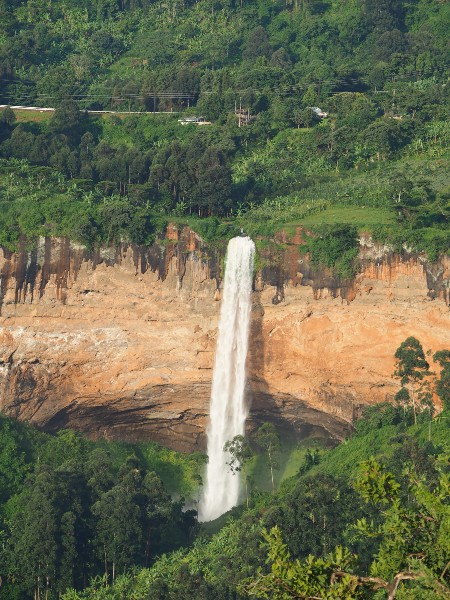
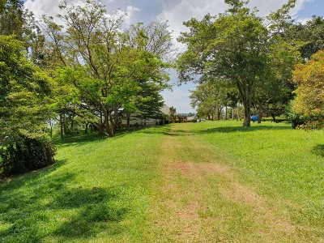
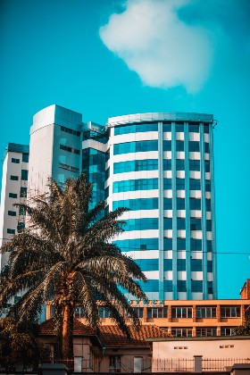
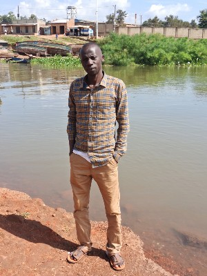

Discover Kampala City the most beautful city in Uganda
Tour the Nile
Explore the Pearl The Pearl is blessed with an undeniable natural beauty. In the west, the Rwenzori peaks reach towards the sky, the perfect challenge for bold explorers Across the nation, parks are home to some of the worlds most exotic animals: Silverbacks, lions and countless others, ooh… Uganda is home to Africa’s big 5. Winding roads lead to places of grand beauty and unique cultures for those who dare to explore.
Business District
 The Uganda Trade Information Portal is connected to the Global Trade Helpdesk, an ITC, UNCTAD, and WTO initiative.
Discover a world of trade opportunities in one place with detailed information about imports, market dynamics, tariffs,
regulatory requirements, potential buyers and more.
The Uganda Trade Information Portal is connected to the Global Trade Helpdesk, an ITC, UNCTAD, and WTO initiative.
Discover a world of trade opportunities in one place with detailed information about imports, market dynamics, tariffs,
regulatory requirements, potential buyers and more.
Nature
Nature Uganda is the leading membership-based conservation organization in Uganda championing the protection of birds and their habitats
Uganda is a landlocked country in East Africa whose diverse landscape encompasses the snow-capped Rwenzori Mountains and immense Lake Victoria. Its abundant wildlife includes chimpanzees as well as rare birds. Remote Bwindi Impenetrable National Park is a renowned mountain gorilla sanctuary. Murchison Falls National Park in the northwest is known for its 43m-tall waterfall and wildlife such as hippos.
Mountain Rwenzori

At 5,109 metres, Margherita Peak is the highest point on Mount Stanley in the Rwenzori Mountains, and the third-highest peak in Africa. It is the crown jewel of the high-altitude Rwenzori circuit that begins in the lush forests at the foothills, before ascending high above the clouds towards Margherita's icy summit
Hotels in Kampala
Merging elegant style with contemporary comfort, the 186 hotel rooms and suites at the Kampala Hotels are beautifully furnished, appointed with 5-star amenties. Each is an exemplar of timeless charm, refined sophistication and deeply local character, and every room meets the rigorous standards required for inclusion in The Leading Hotels of the World collection.
Lake Victoria
Lake Victoria, also called Victoria Nyanza, is the largest tropical lake and the worlds second largest freshwater lake by surface area, following North Americas Lake Superior in Canada. Covering an area of 68,800 square kilometers 26,565 square miles, it might well be called a small inland sea. Since it is not included in the Rift Valley ecosystem,